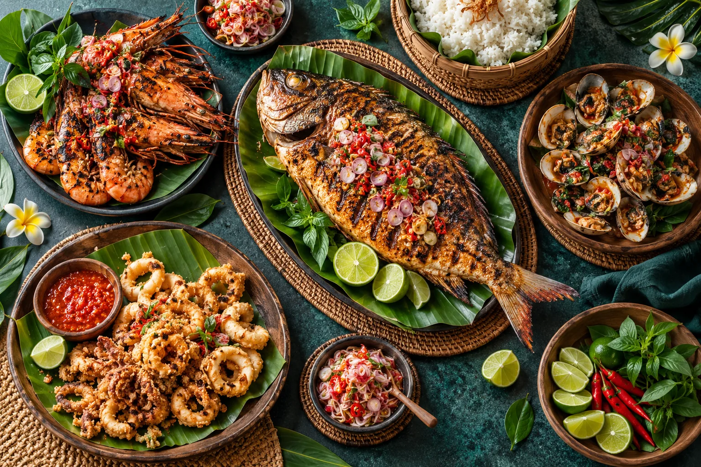

Bara, laut, dan waktu bersama.
Potongan suasana dari dapur terbuka, hidangan segar, dan ruang makan kami di Kuta.




Datang dan buat kenangan sendiri.
Pilih waktu terbaik dan kami akan menyiapkan meja Anda.
Potongan suasana dari dapur terbuka, hidangan segar, dan ruang makan kami di Kuta.

Pilih waktu terbaik dan kami akan menyiapkan meja Anda.